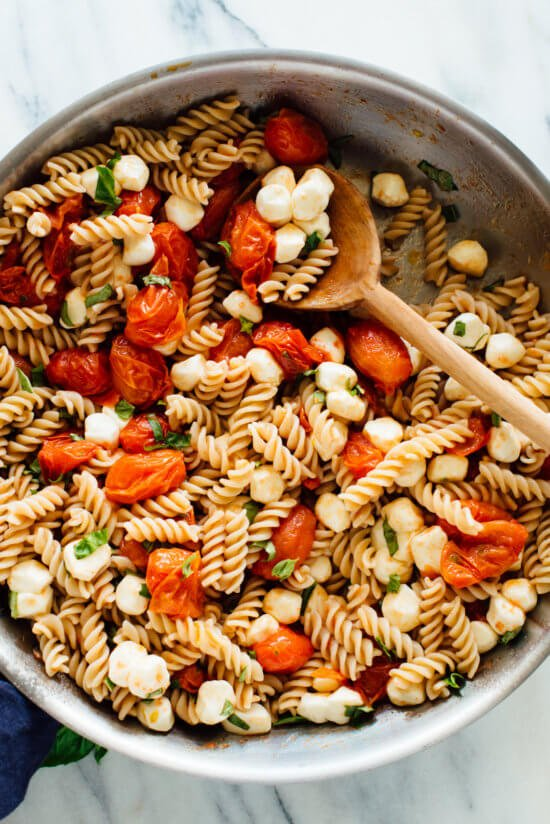

Caprese Pasta Recipe

Description
This is a recipe for a delicious Caprese Pasta dish. This is an easy dish to throw together anytime. It's vegetarian so rest assured, nobody was hurt to make this delicious meal!!!!
Ingredients
- 6 oz. Rotini Pasta
- 2/3 Cup Extra Virgin Olive Oil
- 2 Pints Cherry or Grape Tomatoes
- 1/2 tsp Fine Sea Salt
- 8 ozs. Mozzarella "pearls" or one Mozzarella Ball torn into bite size chunks
- 2 Tbsp Fresh Basil - chopped
- 3 tsp Balsamic Vinegar - to taste
Steps
- Bring large pot of water to boil and cook pasta until al dente, according to package instructions. Drain pasta and set aside
- While pasta is cooking, combine Olive Oil, Tomatoes and Salt in large skillet. Cover.Cook, stirring occasionally until most of the Tomatoes have started to burst and the Olive Oil has a light red hue
- Remove skillet from heat and stir in cooked pasta. Let the mixture cool while you chop the basil. Let cool a few minutes so the cheese doesn't melt in the next step
- Stir the Mozzarella Balls and Basil into the pasta. Add Vinegar, taste and add more if it isn't fabulous yet. For best flavor let sit for 20 minutes so the pasta can absorb some flavor.
- Enjoy!